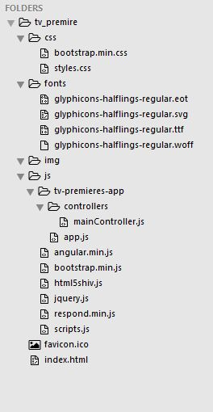
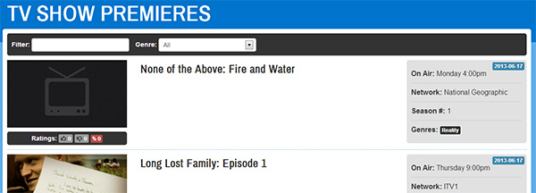

This tutorial will expand your angular.js skills by creating a simple real world web application.
This simple web application will allow its users to view, search and filter TV Show Premieres for the next 7 days. Using simple AJAX & JSON Data along with Angular.js to display everything.
Before we get started, you may want to take a look at the demo from above, to see what we will be creating in this tutorial.
To begin, we need a skeleton AngularJS application which already has all the required JavaScript and CSS to create the TV Show Premieres app. That folder will be in your email inbox, take a minute to download it and open the project files in sublime text 3
Once you have downloaded the files you should have a directory structure as shown below:
Open index.html in your browser, you should see a very simple web page with just a title and some basic formatting as seen below:
The first thing we are going to need to create our TV Show app, is information about TV shows. We are going to use an API provided by Trakt.tv (Keep calm, this is not as hard as it sounds). Before we can get started you are going to need an API key, you can register for one on their website
Why use this API? Do I really have to register? We are using this API so our app will use real data and will actually provide some use once completed. API's allow us to connect with other peoples databases no matter what language we use. Today will give you a light intro on API usage as well.
Now that you have your own API key, we can utilize the Trakt API to get some information on TV shows. We are going to use one of the available API calls for this tutorial, more information on this is available in the api docs . This API call will provide us with all the TV Show Premieres within a specified time frame.
Open
mainController.js
and modify it to match the below code: - make sure you put your new API key inside the quotes" xxxxxxxxxxxxxxxxxxxxxxxxxxxxxxxx " - overwriting the [YOUR API KEY HERE]
app.controller("mainController", function($scope, $http){
$scope.apiKey = "[YOUR API KEY HERE]";
$scope.init = function() {
//API requires a start date
var today = new Date();
//Create the date string and ensure leading zeros if required
var apiDate = today.getFullYear() + ("0" + (today.getMonth() + 1)).slice(-2) + "" + ("0" + today.getDate()).slice(-2);
$http.jsonp('http://api.trakt.tv/calendar/premieres.json/' + $scope.apiKey + '/' + apiDate + '/' + 7 + '/?callback=JSON_CALLBACK').success(function(data) {
console.log(data);
}).error(function(error) {
});
};
});
If you look within the
index.html
file, for the following line:
<div class="container main-frame" ng-app="TVPremieresApp" ng-controller="mainController" ng-init="init()">
You will see that the
ng-init
method is calling the
init
function, this means that the
init()
function within our
mainController
will be called after the page has been loaded.
If you read the API
documentation
for the
calendar/premieres
method you will have seen that it takes three parameters (paremters are just pieces of information), your API key, the start date (e.g. 20130616) and the number of days.
To provide all three parameters, we first need to get today's date using JavaScripts
Date()
method and format it to the API specified date format to create the
apiDate
string. Now that we have everything we need, we can create a
$http.jsonp
call to the API method. This will allow our web app to call a URL that is not within our own domain and receive some JSON data. Ensure that
?callback=JSON_CALLBACK
is prepended onto the request URI so that our attached
.success
callback function is called on response.
Within our
.success
function we then simply output the received data to the console. Open
index.html
within your browser and open the JavaScript console, you should see something like the following:
This demonstrates that we are successfully performing a call to the Trakt API, authenticating with our API key and receiving some JSON data. Now that we have our TV show data, we can move on to the step.
Before we can display our data, we need to process and store it. As the API returns the premiere episodes grouped by date, we want to remove this grouping and just create a single array with all the premiere episodes and their associated data. Modify
mainController.js
to be as follows:
app.controller("mainController", function($scope, $http){
$scope.apiKey = "[YOUR API KEY]";
$scope.results = [];
$scope.init = function() {
//API requires a start date
var today = new Date();
//Create the date string and ensure leading zeros if required
var apiDate = today.getFullYear() + ("0" + (today.getMonth() + 1)).slice(-2) + "" + ("0" + today.getDate()).slice(-2);
$http.jsonp('http://api.trakt.tv/calendar/premieres.json/' $scope.apiKey + '/' + apiDate + '/' + 7 + '/?callback=JSON_CALLBACK').success(function(data) {
//As we are getting our data from an external source, we need to format the data so we can use it to our desired effect
//For each day, get all the episodes
angular.forEach(data, function(value, index){
//The API stores the full date separately from each episode. Save it so we can use it later
var date = value.date;
//For each episodes, add it to the results array
angular.forEach(value.episodes, function(tvshow, index){
//Create a date string from the timestamp so we can filter on it based on user text input
tvshow.date = date; //Attach the full date to each episode
$scope.results.push(tvshow);
});
});
}).error(function(error) {
});
};
});
The above code is well commented and should be easy to follow, lets take a look at these changes. First, we declare a scope variable
$scope.results
as an array which will hold our processed results. We then use
angular.forEach
(which is similar to jQuery's
$.each
method for those who know it) to loop through each date group and store the date in a local
date
variable.
We then create another loop which loops through each of the TV shows within that date group, adds the locally stored date to the
tvshow
object and then finally adds each
tvshow
object to the
$scope.results
array. With all of this done, our
$scope.results
array will look like the following:
We now have some data we wish to display within a list, on our page. We can create some HTML with
ng-repeat
to dynamically create the list elements based on the data within
$scope.results
. Add the following HTML code within the unordered list that has the
episode-list
class in
index.html:
<li ng-repeat="tvshow in results">
<div class="row-fluid">
<div class="col-sm-3">
<img src="{{tvshow.episode.images.screen}}" />
<div class="ratings">
<strong>Ratings:</strong>
<span class="label label-default"><i class="fa fa-thumbs-up"></i> {{tvshow.episode.ratings.loved}}</span>
<span class="label label-default"><i class="fa fa-thumbs-down"></i> {{tvshow.episode.ratings.hated}}</span>
<span class="label label-danger" ng-class="{'label-success': tvshow.episode.ratings.percentage >= 50}"><strong>%</strong> {{tvshow.episode.ratings.percentage}}
</div>
</div>
<div class="col-sm-6">
<h3>{{tvshow.show.title}}: {{tvshow.episode.title}}</h3>
<p>{{tvshow.episode.overview}}</p>
</div>
<div class="col-sm-3">
<div class="fulldate pull-right label label-primary">{{tvshow.date}}</div>
<ul class="show-info">
<li><strong>On Air:</strong> {{tvshow.show.air_day}} {{tvshow.show.air_time}}</li>
<li><strong>Network:</strong> {{tvshow.show.network}}</li>
<li><strong>Season #:</strong> {{tvshow.episode.season}}</li>
<li><strong>Genres:</strong> <span class="label label-inverse genre" ng-repeat="genre in tvshow.show.genres">{{genre}}</span></li>
</ul>
</div>
</div>
</li>
This HTML is simply creating a single list element with
ng-repeat
.
ng-repeat="tvshow in results"
is telling angular to repeat this list element for each object within the
$scope.results
array. Remember that we do not need to include the
$scope
, as we are within an element with a specified controller (refer to the previous tutorial for more on this).
Inside the
li
element we can then reference
tvshow
as a variable which will hold all of the objects data for each of the TV shows within
$scope.results
. Below is an example of one of the objects within
$scope.results
so you can easily see how to reference each slice of data:
{
"show":{
"title":"Agatha Christie's Marple",
"year":2004,
"url":"http://trakt.tv/show/agatha-christies-marple",
"first_aired":1102838400,
"country":"United Kingdom",
"overview":"Miss Marple is an elderly spinster who lives in the village of St. Mary Mead and acts as an amateur detective. Due to her long and eventful life crimes often remind her of other incidents. Although Miss Marple looks sweet, frail, and old, she fears nothing; either dead or living.",
"runtime":120,
"network":"ITV",
"air_day":"Monday",
"air_time":"9:00pm",
"certification":"TV-14",
"imdb_id":"tt1734537",
"tvdb_id":"78895",
"tvrage_id":"2515",
"images":{
"poster":"http://slurm.trakt.us/images/posters/606.jpg",
"fanart":"http://slurm.trakt.us/images/fanart/606.jpg",
"banner":"http://slurm.trakt.us/images/banners/606.jpg"
},
"ratings":{
"percentage":91,
"votes":18,
"loved":18,
"hated":0
},
"genres":[
"Drama",
"Crime",
"Adventure"
]
},
"episode":{
"season":6,
"number":1,
"title":"A Caribbean Mystery",
"overview":"\"Would you like to see a picture of a murderer?\", Jane Marple is asked by Major Palgrave whilst on a luxurious holiday in the West Indies. When she replies that she would like to hear the story, he explains. There once was a man who had a wife who tried to hang herself, but failed. Then she tried again later, and succeeded in killing herself. The man remarried to a woman who then tried to gas herself to death. She failed, but then tried again later and succeeded. Just as Major Palgrave is about to show the picture to her, he looks over her shoulder, appears startled, and changes the subject. The next morning, a servant, Victoria Johnson, finds him dead in his room. Doctor Graham concludes that the man died of heart failure; he showed all the symptoms, and had a bottle of serenite (a drug for high blood pressure) on his table.",
"url":"http://trakt.tv/show/agatha-christies-marple/season/6/episode/1",
"first_aired":1371366000,
"images":{
"screen":"http://slurm.trakt.us/images/fanart/606-940.jpg"
},
"ratings":{
"percentage":0,
"votes":0,
"loved":0,
"hated":0
}
},
"date":"2013-06-16"
}
As an example, within the
li
element, we can get the show title by referencing
tvshow.show.title
and wrapping it in double curly brackets:
{{ }}
. With this understanding, it should be easy to see what information will be displayed for each list element. Thanks to the CSS bundled with the skeleton structure, if you save these changes and open
index.html
within your browser, you should see a nicely formatted list of TV shows with the associated information and images. This is shown in the image below:
You may or may not have noticed:
ng-class="{'label-success': tvshow.episode.ratings.percentage >= 50}"
...which is attached to one of the span elements, within the ratings section, in the above HTML.
ng-class
allows us to conditionally apply classes to HTML elements. This is particularly useful here, as we can then apply a different style to the percentage
span
element depending on whether the TV show rating percentage is high or not.
In the above HTML example, we want to apply the class
label-success
, which is a Twitter Bootstrap class, which will style the span to have a green background and white text. We only want to apply this class to the element if the rating percentage is greater than or equal to 50. We can do this as simply as
tvshow.episode.ratings.percentage >= 50
. Take a look down the list of formatted TV shows in your browser, if any of the percentages meet this condition, they should be displayed green.
SUCCESS! We now have a list of upcoming TV show premieres, which is great, but it doesn't offer much in the way of functionality. We are now going to add a simple text search which will filter all of the objects within the results array.
First we need to declare a
$scope.filterText
variable within
mainController.js
as follows:
app.controller("mainController", function($scope, $http){
$scope.apiKey = "[YOUR API KEY]";
$scope.results = [];
$scope.filterText = null;
$scope.init = function() {
//API requires a start date
var today = new Date();
//Create the date string and ensure leading zeros if required
var apiDate = today.getFullYear() + ("0" + (today.getMonth() + 1)).slice(-2) + "" + ("0" + today.getDate()).slice(-2);
$http.jsonp('http://api.trakt.tv/calendar/premieres.json/' $scope.apiKey + '/' + apiDate + '/' + 7 + '/?callback=JSON_CALLBACK').success(function(data) {
//As we are getting our data from an external source, we need to format the data so we can use it to our desired affect
//For each day get all the episodes
angular.forEach(data, function(value, index){
//The API stores the full date separately from each episode. Save it so we can use it later
var date = value.date;
//For each episodes add it to the results array
angular.forEach(value.episodes, function(tvshow, index){
//Create a date string from the timestamp so we can filter on it based on user text input
tvshow.date = date; //Attach the full date to each episode
$scope.results.push(tvshow);
});
});
}).error(function(error) {
});
};
});
Now we need to add a text input so that the user can actually input a search term. We then need to bind this input to the newly declared variable. Add the following HTML within the
div
which has the
search-box
class in
index.html.
<label>Filter: </label>
<input type="text" ng-model="filterText"/>
ng-repeat
OutputNow that we have the text to filter on, we need to add the filtering functionality to
ng-repeat
. Thanks to the built-in filter functionality of AngularJS, we do not need to write any JavaScript to do this, just modify your
ng-repeat
as follows:
<li ng-repeat="tvshow in results | filter: filterText">
It's as simple as that! We are telling AngularJS - before we output the data using
ng-repeat
, we need to apply the filter based on the filterText variable. Open
index.html
in a browser and perform a search. Assuming you searched for something that exists, you should see a selection of the results.
You can see from the above HTML that we have created a select input bound to a model variable called
genreFilter
. Using
ng-options
we are able to dynamically populate this select input using an array called
availableGenres
.
First of all, we need to declare these scope variables. Update your
mainController.js
file to be as follows:
<label>Genre: </label>
<select ng-model="genreFilter" ng-options="label for label in availableGenres">
<option value="">All</option>
</select>
We have now declared both
genreFilter
and
availableGenres
which we saw referenced within our HTML. We have also added some JavaScript which will populate our
availableGenres
array. Within the
init()
function, while we are processing the JSON data returned from the API, we are now doing some additional processing and adding any genres that are not already within the
availableGenres
array to this array. This will then populate the select input with any available genres.
If you open
index.html
within your browser, you should see the genre select drop down populate as illustrated below:
app.controller("mainController", function($scope, $http){
$scope.apiKey = "[YOUR API KEY HERE]";
$scope.results = [];
$scope.filterText = null;
$scope.availableGenres = [];
$scope.genreFilter = null;
$scope.init = function() {
//API requires a start date
var today = new Date();
//Create the date string and ensure leading zeros if required
var apiDate = today.getFullYear() + ("0" + (today.getMonth() + 1)).slice(-2) + "" + ("0" + today.getDate()).slice(-2);
$http.jsonp('http://api.trakt.tv/calendar/premieres.json/' $scope.apiKey + '/' + apiDate + '/' + 7 + '/?callback=JSON_CALLBACK').success(function(data) {
//As we are getting our data from an external source, we need to format the data so we can use it to our desired affect
//For each day get all the episodes
angular.forEach(data, function(value, index){
//The API stores the full date separately from each episode. Save it so we can use it later
var date = value.date;
//For each episodes add it to the results array
angular.forEach(value.episodes, function(tvshow, index){
//Create a date string from the timestamp so we can filter on it based on user text input
tvshow.date = date; //Attach the full date to each episode
$scope.results.push(tvshow);
//Loop through each genre for this episode
angular.forEach(tvshow.show.genres, function(genre, index){
//Only add to the availableGenres array if it doesn't already exist
var exists = false;
angular.forEach($scope.availableGenres, function(avGenre, index){
if (avGenre == genre) {
exists = true;
}
});
if (exists === false) {
$scope.availableGenres.push(genre);
}
});
});
});
}).error(function(error) {
});
};
});

When the user chooses a genre, the
$scope.genreFilter
variable will be updated to equal the selected value.
As we are wanting to filter on a specific part of the TV show objects, we are going to create a custom filter function and apply it alongside the AngularJS filter within the
ng-repeat
.
At the very bottom of
mainController.js
, after all of the other code, add the following JavaScript:
app.filter('isGenre', function() {
return function(input, genre) {
if (typeof genre == 'undefined' || genre == null) {
return input;
} else {
var out = [];
for (var a = 0; a < input.length; a++){
for (var b = 0; b < input[a].show.genres.length; b++){
if(input[a].show.genres[b] == genre) {
out.push(input[a]);
}
}
}
return out;
}
};
});
The above JavaScript declares a custom filter to our app called
isGenre
. The function within the filter takes two parameters,
input
and
genre
.
input
is provided by default (which we will see in a moment) and is all the data that the
ng-repeat
is processing.
genre
is a value we need to pass in. All this filter does, is take the specified genre and checks to see if each of the TV show objects within
input
have the specified genre attached to them. If an object has the specified genre, it adds it to the
out
array, which will then be returned to the
ng-repeat
. If this doesn't quite make sense, don't worry! It should shortly.
Now that we have our customer filter available, we can add this additional filter to our ng-repeat. Modify your
ng-repeat
in
index.html
as follows:
This simply chains another filter onto the
ng-repeat
output. Now the output will be processed by both filters before it is displayed on the screen. As you can see we have specified our custom filter as
isGenre:
and then we are passing the scope variable
genreFilter
as a parameter, which is how we provide our customer filter with the
genre
variable we talked about earlier. Remember that AngularJS is also providing our filter with the data that the
ng-repeat
is processing as the
input
variable.
<li ng-repeat="tvshow in results | filter: filterText | isGenre:genreFilter">
OK, our custom genre filter is complete. Open
index.html
in a browser and test out the new functionality. With this filter in place, a user can easily filter out genres they are not interested in.
You may have noticed that each TV show listing also shows the genre itself. For some additional functionality, we are going to allow the user to click these genres, which will then automatically apply the genre filter for the genre they have clicked on. First of all, we need to create a scope function that the
ng-click
can call. Add the following code within the
mainController
on
mainController.js
:
$scope.setGenreFilter = function(genre) {
$scope.genreFilter = genre;
}
In the above code, this function takes a genre value and then sets the
$scope.genreFilter
to the specified value. When this happens, the genre filter select box's value will update and the filter will be applied to the
ng-repeat
output. To trigger this function when the genre span elements are clicked, add an
ng-click
to the genre span elements within
index.html
as follows:
<span class="label label-inverse genre" ng-repeat="genre in tvshow.show.genres" ng-click="setGenreFilter(genre)">{{genre}}</span>
The
ng-click
calls our previously created
setGenreFilter
function and specifies a genre. Open
index.html
and try it out!
Our TV show premiere app is looking pretty good, users can easily refine the results displayed using a series of intuitive filters. To enhance this experience we are going to add some custom ordering functionality so our users will be able to choose a range of ordering options.
Add the following HTML under the genre select drop down:
<label>Order by: </label>
<select ng-model="orderField" ng-options="label for label in orderFields" class="input-medium"></select>
<select ng-model="orderReverse"class="input-medium">
<option value="true">Descending</option>
<option value="false">Ascending</option>
</select>
With this code added, we have two more drop downs. One to select how to order the data and another to choose the direction in which to order the data. We now need to create a function within our controller to make the order comparison. Add the following JavaScript under our
setGenreFilter function:
$scope.customOrder = function(tvshow) {
switch ($scope.orderField) {
case "Air Date":
return tvshow.episode.first_aired;
break;
case "Rating":
return tvshow.episode.ratings.percentage;
break;
}
};
We also need to declare some additional scope variables:
$scope.orderFields = ["Air Date", "Rating"];
$scope.orderDirections = ["Descending", "Ascending"];
$scope.orderField = "Air Date"; //Default order field
$scope.orderReverse = false;
If you now open
index.html
within your browser, you should see the added drop downs populated with
Air Date
already selected as the default order field. This is shown in the figure below:
Finally, as we have done with our other filters, we are going to need to append this to our
ng-repeat
, update this as follows:
<li ng-repeat="tvshow in results | filter: filterText | isGenre:genreFilter | orderBy:customOrder:orderReverse">
We are now applying an order-by-filter on our data in addition to the other filters. We are telling the order by to use our
customOrder
function and we are passing our
orderReverse
scope variable through as well. Open
index.html
in a browser and see the ordering in action.
AngularJS has allowed us to quickly create a detailed and functional web application with minimum effort. Utilizing AngularJS's built-in filter functions, alongside some of our own custom code, our web application allows our users to easily filter and search through the TV show premieres.
After reading this tutorial you should now be able to understand and use the following principles:
ng-repeat
to display information on screen.
ng-repeat
output.
ng-repeat
to perform multiple filtering functions.
ng-click
to respond to user interaction.
ng-class
to conditionally apply styling to page elements.
So in conclusion, the topics covered in this tutorial should give you a strong foundation and understanding of what you can achieve when creating rich web applications in AngularJS.